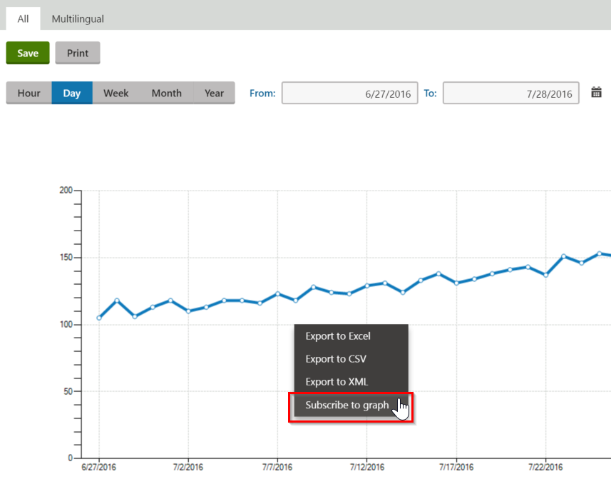
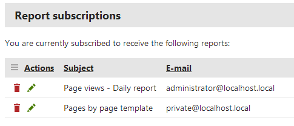
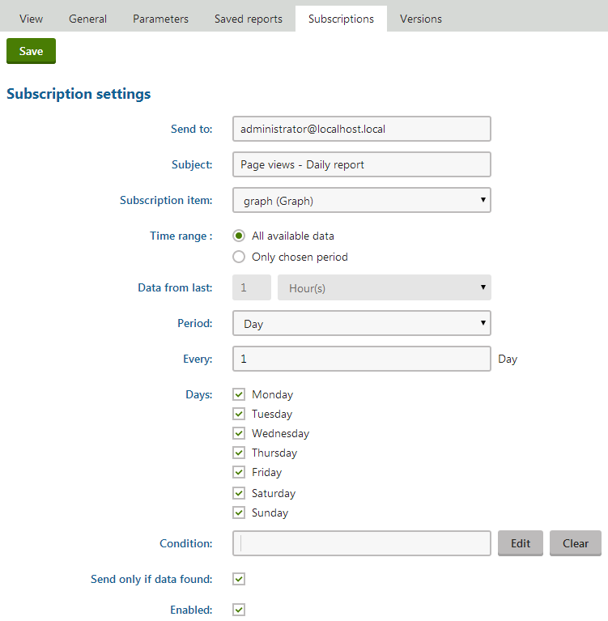

Subscribing to reports
If users are interested in the content of a specific report or want to follow the progress of its data, they can use the subscription feature. Subscribers will regularly receive emails with the up‑to‑date status of the given report. This way, users can easily keep track of the data provided by the report simply by checking their email, without having to access the website or its administration interface.
Requirements
There are several levels of settings for enabling report subscriptions:
On the General tab of the report editing interface in the Reporting application, the Enable subscription checkbox applies to the entire report.
Another Enable subscription setting is available when configuring the details of individual components (graphs, tables or values). If both these settings are enabled, it is possible to subscribe to specific components.
For reports published on the website's pages, subscription also needs to be allowed through the Enable subscription property of the web part or widget used to display the given report.
Additionally, subscription is only available for users who belong to a role that has the Subscribe or Modify permission for the Reporting module.
Subscribing to reports
To subscribe to an entire report:
Open the Reporting application.
Edit (
 ) a report you want to subscribe to.
) a report you want to subscribe to.On the View tab, click the Subscribe button.
To subscribe to individual components of the report (graphs, tables or values):
Open a section of the administration interface that provides reports (such as Web analytics).
Right-click the appropriate component in the report.
Select the Subscribe to option in the menu.

To subscribe to a report displayed on the live site:
Right-click a chosen component in the report (you cannot subscribe to the whole report).
Select the Subscribe to option in the menu.
Report subscription settings
The following settings are available for report subscriptions:
|
Subscription settings |
|
|
Send to |
Sets the email address to which the subscription emails will be sent. By default, the address of the current user is loaded, but it is possible to specify a different one. |
|
Subject |
Allows you to enter the subject that will be used for the subscription emails. |
|
Subscription item |
Determines whether the subscription emails should include the full content of the report or only a specific graph, table or value component. |
|
Time range |
This setting is only available for reports that offer the possibility of displaying data from a specific time range, selected using From and To parameters (e.g. most web analytics and on‑line marketing reports in the system). You can choose from the following options:
|
|
Sending interval |
Through the interval settings, you can define how often and when exactly the report subscription emails should be sent. |
|
Condition |
May be used to enter an additional macro condition that must be fulfilled in order for the subscription emails to be sent. For example: SiteObjects.ABTests.HomePageTest.ABTestEnabled This sample condition ensures that the subscription is active only while a specific A/B test (with code name HomePageTest) is enabled. You can write any condition according to your specific requirements. |
|
Send only if data found |
If checked, subscription emails will only be sent if the report contains data at the given time (the subscriber will not receive empty reports). |
|
Enabled |
Emails will only be sent for subscriptions that are enabled. |
|
Subscription parameters |
|
|
If the given report has parameters, this section allows you to set the values that should be used in the reports sent to the subscriber. Only parameters that are configured to be visible when viewing the report can be edited (i.e. those that have the Display field in the editing form checkbox enabled on the Parameters tab of the given report). |
|
Time range parameters
Some reports offer the possibility of displaying data from a specific time span selected through parameters. This functionality is ensured by two parameters with Column names set to FromDate and ToDate respectively on the Parameters tab.
These two parameters are not displayed in the subscription parameters section. Instead, subscriptions to reports that contain them provide the Time range and Data from last settings, which may be used to specify the appropriate values.
Unsubscribing
Users can cancel their subscription to a report in the following ways:
By clicking on the unsubscription link included in every email (when using the default email template).
The link leads to the ~/CMSModules/Reporting/CMSPages/Unsubscribe.aspx system page, where the user can confirm that they wish to unsubscribe from the given report. The appropriate subscription to be removed is automatically identified using parameters passed in the query string of the link's URL.
Site administrators can manage subscriptions of a chosen report in the Reporting application (edit the report on the Subscriptions tab).
Users with access to the administration interface can view their report subscriptions in the My profile application on the Subscriptions tab, and manually Unsubscribe (
 ) as needed.
) as needed.All report subscriptions created by the current user are listed here, even if the target email address belongs to someone else.

For live site users, the Unsubscribe option can be provided by the My account web part (as long as the web part's Display my subscriptions and Display report subscriptions properties are enabled).
After unsubscribing through any of the described ways, the system automatically sends a notification email to the given address.
Managing report subscriptions
When editing a report in the Reporting application, you can view and manage all of its subscriptions on the Subscriptions tab.
Creating or editing subscriptions here offers the standard subscription dialog, but with several additional options:
Subscription item selector - can be used to choose whether the subscription emails should include the full content of the report or only a specific graph, table or value component.
Enabled - uncheck to disable individual subscriptions.
Subscription parameters section - if the currently edited report has parameters, this section provides a way to enter the values that should be used for the reports sent to the subscriber.
You can edit only those parameters that are configured to be visible when viewing the report (i.e. those that have the Display field in the editing form flag enabled on the Parameters tab).

Managing a report's subscription
Every authenticated user may also configure these options for their own report subscriptions in My profile -> Subscriptions or on a page containing the My account web part, after editing (
) the appropriate subscription.
Time range parameters
Some reports offer the possibility of displaying data from a specific time span selected through parameters (e.g. most web analytics and on‑line marketing reports in the system). This functionality is ensured by two parameters with Column names set to FromDate and ToDate respectively on the Parameters tab.
These two parameters are not displayed in the Subscription parameters section. Instead, subscriptions to reports that contain them provide the Time range and Data from last settings, which may be used to specify the appropriate values.
Scheduling subscription mailout
To ensure that the report subscription emails are sent correctly and at the appropriate time, the system uses a global scheduled task called Report subscription sender. When executed, this task goes through all enabled reporting subscriptions and checks their settings. If the time interval requirements and condition of a subscription are fulfilled, the system sends out an email with the current content of the given report.
By default, the system executes the task every minute. You can change this configuration in the Scheduled tasks application. However, if you wish to use report subscriptions, the task must always be enabled and scheduled frequently.
Important!
To be able to send emails, the system needs to be connected to a working SMTP server. To learn how this can be done, see the Configuring SMTP servers topic.
Email templates
The content of the reporting emails sent to subscribers is based on email templates. If you wish to customize the emails in some way, you can edit the templates in the Email templates application. The following templates are available:
Reporting - Subscription template - defines the content of the main subscription emails used to send the report status.
Reporting - Subscription confirmation - used for the automatic notification emails sent to the recipient when a new subscription is created.
Reporting - Unsubscription confirmation - used for the notifications that users receive after unsubscribing (or when the subscription is removed by an administrator).
Reports in plain text
If your system is configured to send emails in plain text format, the content of report subscription emails will be limited. In this case, image based graphs are included as attachments and the data from tables is sent in an a CSV file. HTML graphs are not represented at all.
You can choose the preferred email format using the Email format setting in Settings -> System -> Emails.
You can use the following macros in report subscription email templates:
{% SubscriptionBody %} - this macro is resolved into the content of the subscribed report or component.
{% DefaultSubscriptionCSS %} - used to add the CSS styles that are required to properly display report content in the email. This should always be included in the <head>/<style> element in the HTML version of the subscription template.
{% ItemName %} - for subscriptions to individual reporting components, this macro resolves into the name and type (graph, table or value) of the given item. In the case of full report subscriptions, it returns an empty string.
{% UnsubscriptionLink %} - generates a link that can be used to cancel the given subscription.
It is also possible to access the following related objects and their properties (e.g. {% Report.ReportDisplayName %} ):
{% Report %} - ReportInfo object representing the report to which the user is subscribed.
{% ReportSubscription %} - ReportSubscriptionInfo object of the subscription for which the email is being sent.